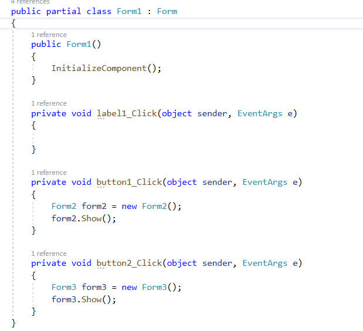
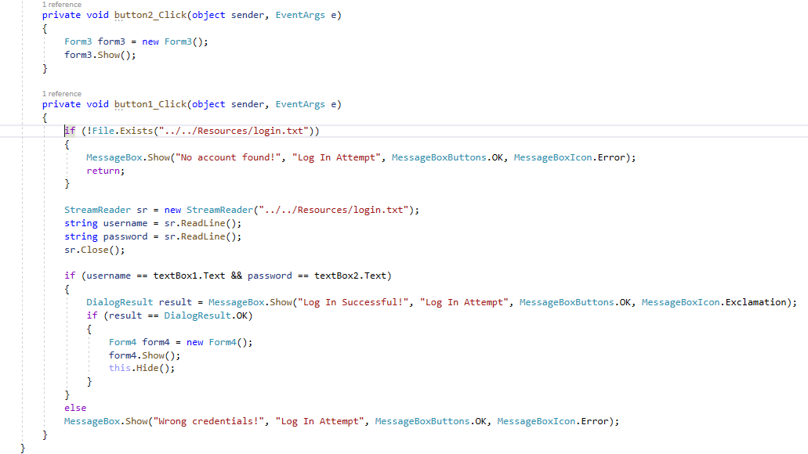
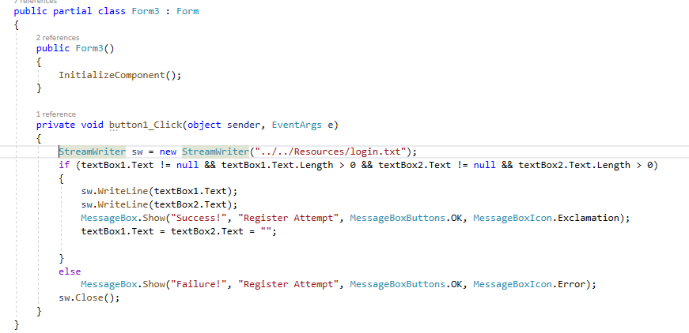
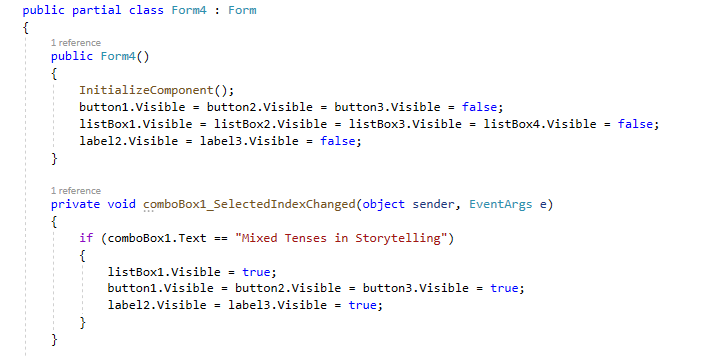
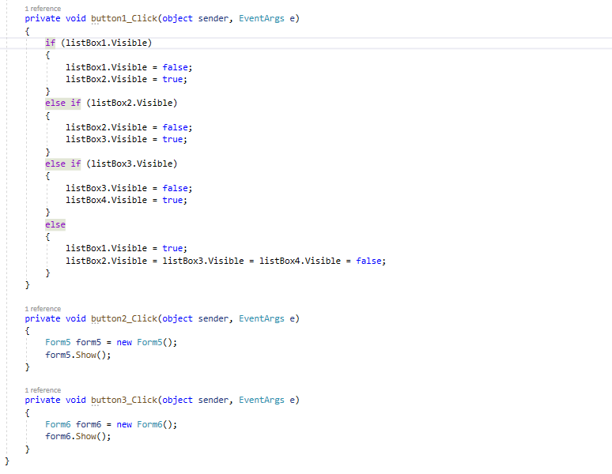
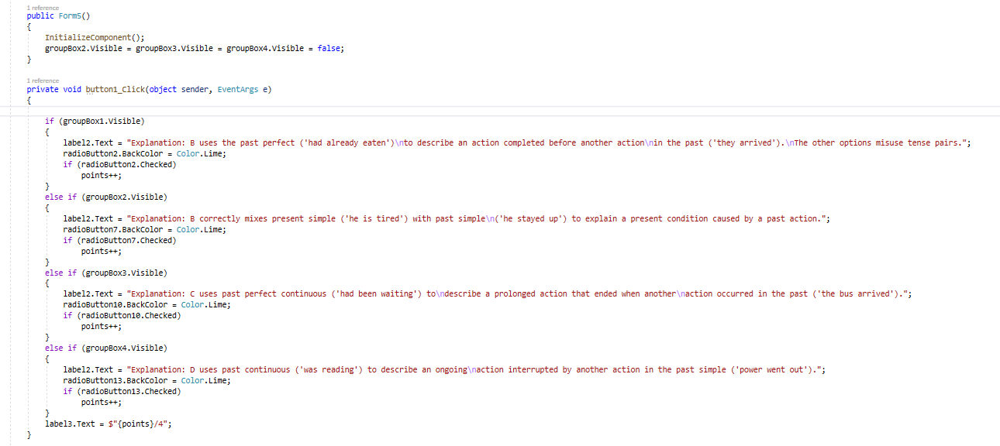
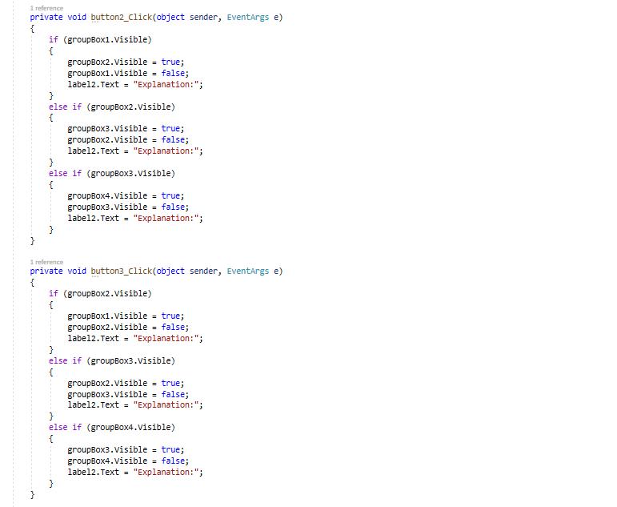

Code Explanation
First Form - Landing Form
The code here is very simple. If you click the Log In button the Log In Form opens, same thing for the Registration Form.
Second Form - Log In Form
The code here does two things. First, if you click the Register button the Registration Form appears. If you click log in a few checks have to be completed for the Log In to be successful. First, we check if a file exists, if it doesn't then a registration doesn't exist and has to be made first. If it does then we open the file "login.txt" and get the credentials. If they are the same as the ones entered in the fields then a message will appear and when you click ok the Information Form appears.
Third Form - Register Form
The code here makes the registration. When you write valid username and passwords the code uses System.IO to write into a file and save them for later use.
Fourth Form - Information Form
 In this form we first make all buttons, lists and labels invisible until the right option is chosen. When "Mixed Tenses in Storytelling" is selected everything appears and you can read about the tense. There are 4 separate list boxes which are switched when next is clicked. When one is shown the others are hidden. The sample story and test buttons open the coresponding forms.
Fifth Form - Test Form
 The test consists of 4 group boxes and all of them except the first one are hidden on launch. The test is made of 4 radio buttons with 4 answers only one correct. When the button check is clicked an explanation is shown in label2, the correct answer's radio button's back color is set to lime and a point is given if the answer is correct. The points are also displayed at the top. If the next or previous buttons are clicked the question is changed to the next or previous one and the explanation label, radio buttons' back colors are cleared and the new group box is shown.